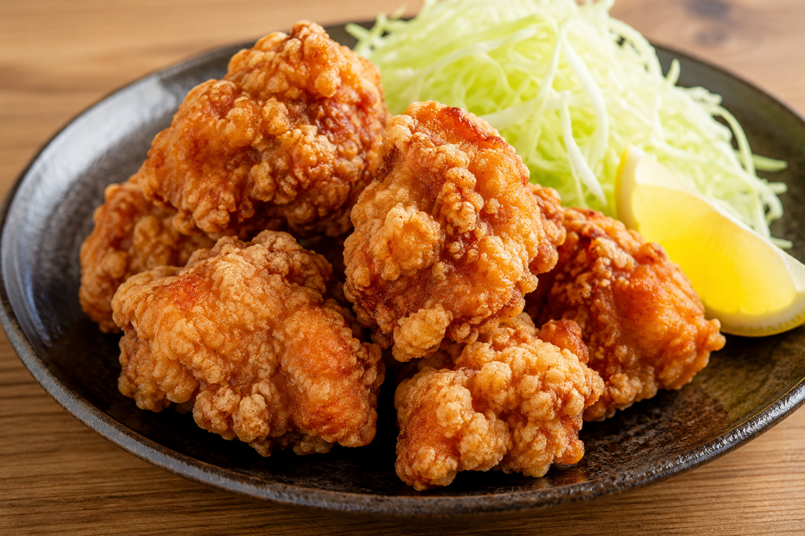

今日の単語
余韻
余韻とは、出来事や言葉が終わったあとも心に残る感覚のことです。 本を読み終えたあとや映画を見終えたあと、 静かに心に残る時間を表す、とても好きな言葉です。
木漏れ日
木漏れ日とは、 木々の間から差し込む太陽の光のことです。 日本語ならではの美しい表現で、 見かけると心が落ち着きます。
一期一会
一期一会とは、 一生に一度の出会いを大切にするという意味です。 人との出会いだけでなく、 言葉との出会いも大切にしたいと思っています。
唐揚げの気持ち

唐揚げの気持ちとは、
揚げたての唐揚げを見たときに思わず笑顔になってしまう、
幸せな気持ちを表す（自分だけの）言葉です。
疲れた日でも、おいしい唐揚げを食べると
「今日も頑張ってよかった」と思えるので、
お気に入りの言葉として追加しました。